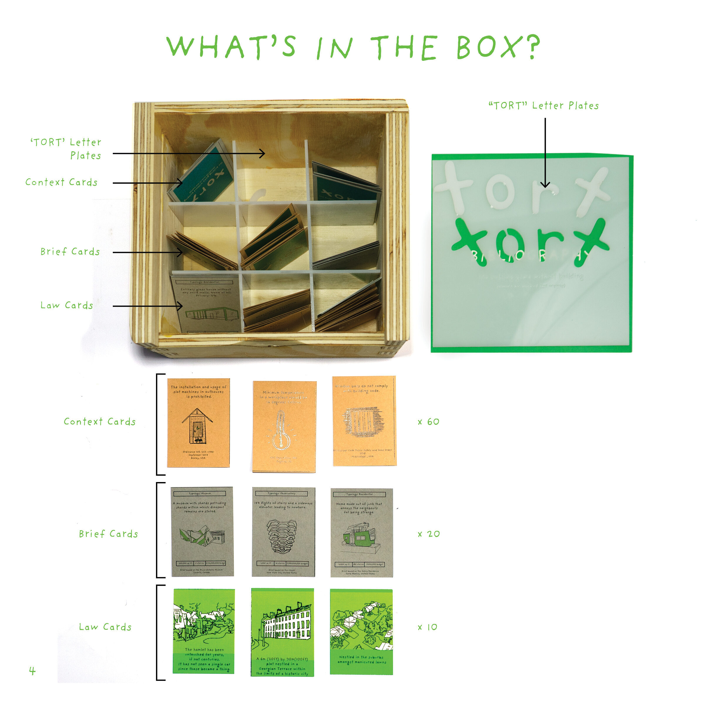
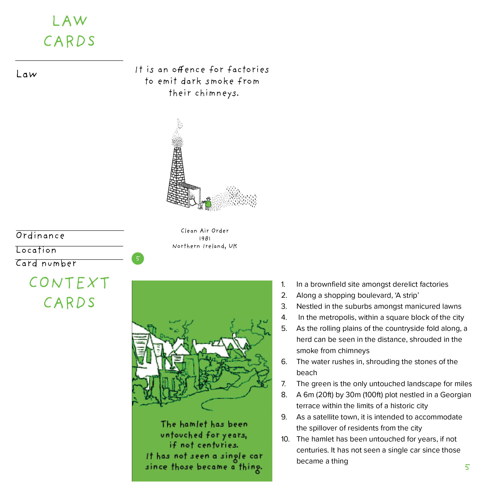
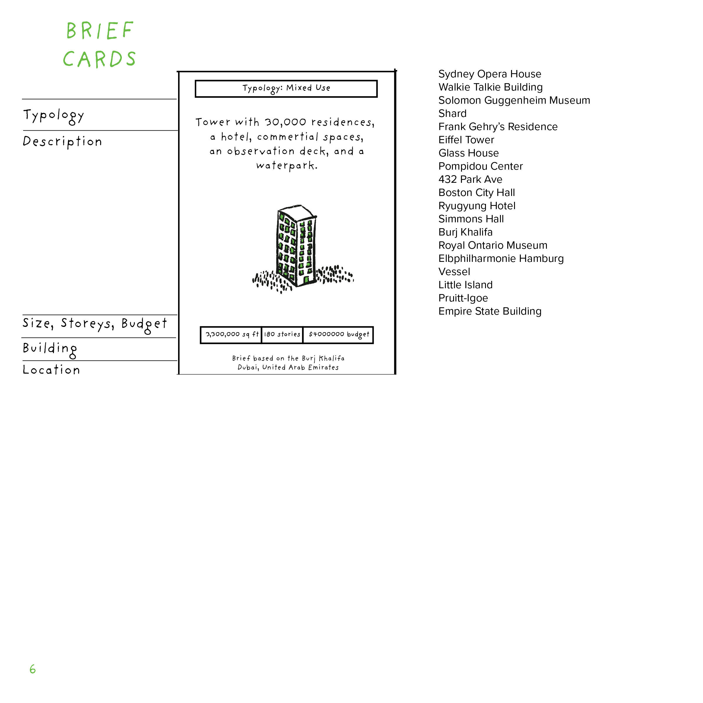

2021
TORT
The Building Game without Building (there’s too much of that anyway)
Are you tired of hating the buildings around you? Do you just want to tear them all down? Tort is the building game without building—the game where buildings don’t happen because of your legal prowess.
CONTEXT
4.205: Cultivating Critical Practice, MIT
SOFTWARE + TOOLS
Procreate, Illustrator, laser cutting
COLLABORATOR
Soala Ajienka
SUPERVISOR
Ana Miljački

Tort is a card game about agency: does it belong to users, architecture, or architects? It combines active but ridiculous laws from around the world with design briefs inspired by existing projects.
Players choose which law is most useful for preventing a proposed building and make a case for applying it. The humorous play exposes obscure entanglements between communities, policy, and the built environment.
The game asks who the unseen actors affected by a building project are, how policies and laws are accounted for, and how the public can take agency over urban proposals before they are realized.
How to play




The laws and briefs